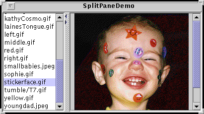
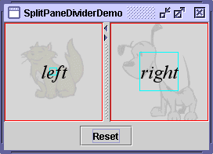
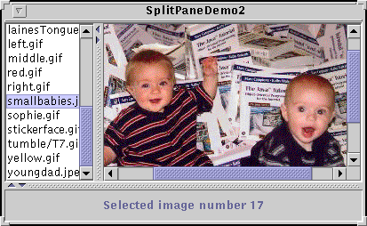

Feedback Form
|
|
Start of Tutorial > Start of Trail > Start of Lesson |
Search
Feedback Form |
AJSplitPanedisplays two components, either side by side or one on top of the other. By dragging the divider that appears between the components, the user can specify how much of the split pane's total area goes to each component. You can divide screen space among three or more components by putting split panes inside of split panes, as described in Nesting Split Panes.
Instead of adding the components of interest directly to a split pane, you often put each component into a scroll pane. You then put the scroll panes into the split pane. This allows the user to view any part of a component of interest, without requiring the component to take up a lot of screen space or adapt to displaying itself in varying amounts of screen space.
Here's a picture of an application that uses a split pane to display a list and an image side by side:
 [PENDING: This figure will be updated.]
Below is the code from
Try this:
- Run SplitPaneDemo using JavaTM Web Start
. Or, to compile and run the example yourself, consult the example index.
- Drag the dimpled line that divides the list and the image to the left or right. Try to drag the divider all the way to the window's edge.
- Click the tiny arrows on the divider to hide/expand the left or right component.
SplitPaneDemothat creates and sets up the split pane.The constructor used by this example takes three arguments. The first indicates the split direction. The other arguments are the two components to put in the split pane. Refer to Setting the Components in a Split Pane for information about//Create a split pane with the two scroll panes in it. splitPane = new JSplitPane(JSplitPane.HORIZONTAL_SPLIT, listScrollPane, pictureScrollPane); splitPane.setOneTouchExpandable(true); splitPane.setDividerLocation(150); //Provide minimum sizes for the two components in the split pane Dimension minimumSize = new Dimension(100, 50); listScrollPane.setMinimumSize(minimumSize); pictureScrollPane.setMinimumSize(minimumSize);JSplitPanemethods that set the components dynamically.The split pane in this example is split horizontally — the two components appear side by side — as specified by the
JSplitPane.HORIZONTAL_SPLITargument to the constructor. Split pane provides one other option, specified withJSplitPane.VERTICAL_SPLIT, that places one component above the other. You can change the split direction after the split pane has been created with thesetOrientationmethod.Two small arrows appear at the top of the divider in the example's split pane. These arrows let the user collapse (and then expand) either of the components with a single click. The current look and feel determines whether these controls appear by default. In the Java look and feel, they are turned off by default. The example turned them on using the
setOneTouchExpandablemethod.The range of a split pane's divider is determined in part by the minimum sizes of the components within the split pane. See Positioning the Divider and Restricting its Range for details.
The rest of this section covers these topics:
A program can set a split pane's two components dynamically with these four methods:You can use any of these methods at any time regardless of the split pane's current split direction. Calls to
setLeftComponentsetRightComponentsetTopComponentsetBottomComponentsetLeftComponentandsetTopComponentare equivalent and set the specified component in the top or left position, depending on the split pane's current split orientation. Similarly, calls tosetRightComponentandsetBottomComponentare equivalent. These methods replace whatever component is already in that position with the new one.Like other containers,
JSplitPanesupports theaddmethod. Split pane puts the first component added in the left or top position. The danger of usingaddis that you can inadvertantly call it too many times, in which case the split pane's layout manager will throw a rather esoteric-looking exception. If you are using theaddmethod and a split pane is already populated, you first need to remove the existing components withremove.If you put only one component in a split pane, then the divider will be stuck at the right side or the bottom of the split pane, depending on its split direction.
To make your split pane work well, you often need to set the minimum sizes of components in the split pane, as well as the preferred size of either the split pane or its contained components. Choosing which sizes you should set is an art that requires understanding how a split pane's preferred size and divider location are determined. Before we get into details, let's take another look at SplitPaneDemo. Or, if you're in a hurry, you can skip to the list of rules.
Try this:
- Run SplitPaneDemo using Java Web Start
Because the size of the demo's frame is set using thepackmethod, the split pane is at its preferred size, which SplitPaneDemo happens to set explicitly. The divider is automatically placed so that the left component is at its preferred width and all remaining space goes to the right component.- Make the window wider.
The divider stays where it is, and the extra space goes to the component at the right.- Make the window noticeably narrower than when it first came up — perhaps twice as wide as the left component.
Again, the left component's size and the divider position stay the same. Only the size of the right component changes.- Make the window as narrow as possible.
Assuming the window uses the Java look and feel-provided decorations, you can't size the window smaller than the split pane's minimum size, which is determined by the minimum size of the components contained by the split pane. SplitPaneDemo sets the minimum size of these contained components explicitly.- Make the window wider, and then drag the divider as far as it will go to the right.
The divider goes only as far as the right component's minimum size allows. If you drag the divider to the left, you'll see that it also respects the left component's minimum size.Now that you've seen the default behavior of split panes, we can tell you what's happening behind the scenes and how you can affect it. In this discussion, when we refer to a component's preferred or minimum size, we often mean the preferred or minimum width of the component if the split pane is horizontal, or its preferred or minimum height if the split pane is vertical.
By default, a split pane's preferred size and divider location are initialized so that the two components in the split pane are at their preferred sizes. If the split pane isn't displayed at this preferred size and the program hasn't set the divider's location explicitly, then the initial position of the divider (and thus the sizes of the two components) depends on a split pane property called the resize weight. If the split pane is initially at its preferred size or bigger, then the contained components start out at their preferred sizes, before adjusting for the resize weight. If the split pane is initially too small to display both components at their preferred sizes, then they start out at their minimum sizes, before adjusting for the resize weight.
A split pane's resize weight has a value between 0.0 and 1.0 and determines how space is distributed between the two contained components when the split pane's size is set — whether programmatically or by the user resizing the split pane (enlarging its containing window, for example). The resize weight of a split pane is 0.0 by default, indicating that the left or top component's size is fixed, and the right or bottom component adjusts its size to fit the remaining space. Setting the resize weight to 0.5 splits any extra or missing space evenly between the two components. Setting the resize weight to 1.0 makes the right or bottom component's size remain fixed. The resize weight has no effect, however, when the user drags the divider.
The user can drag the divider to any position as long as neither contained component goes below its minimum size. If the divider has one-touch buttons, the user can use them to make the divider move completely to one side or the other — no matter what the minimum sizes of the components are.
Now that you know the factors that affect a split pane's size and divider location, here are some rules for making them work well:
The following snapshot shows an example named SplitPaneDividerDemo that demonstrates split pane component sizes and divider placement.
- To ensure that the divider can be dragged when the split pane is at its preferred size, make sure the minimum size of one or both contained components is smaller than the contained component's preferred size. You can set the minimum size of a component either by invoking
setMinimumSizeon it or by overriding itsgetMinimumSizemethod. For example, if you want the user to be able to drag the divider all the way to both sides:Dimension minimumSize = new Dimension(0, 0); leftComponent.setMinimumSize(minimumSize); rightComponent.setMinimumSize(minimumSize);- To guarantee that both contained components appear, make sure that either the split pane is initially at or above its preferred size, or the minimum sizes of the contained components are greater than zero.
- If you want the bottom or right component to stay the same size and the top or left component to be flexible when the split pane gets bigger, set the resize weight to 1.0. You can do this by invoking
setResizeWeight:splitPane.setResizeWeight(1.0);
- If you want both halves of the split pane to share in the split pane's extra or removed space, set the resize weight to 0.5:
splitPane.setResizeWeight(0.5);
- Make sure each component contained by a split pane has a reasonable preferred size. If the component is a panel that uses a layout manager, you can generally just use the value it returns. If the component is a scroll pane, you have a few choices. You can invoke the
setPreferredSizemethod on the scroll pane, invoke the appropriate method on the component in the scroll pane (such as thesetVisibleRowCountmethod forJListorJTree), or just set the split pane's preferred size and the divider's location.
- Make sure each component contained by a split pane can display itself reasonably in varying amounts of space. For example, panels that contain multiple components should use layout managers that use extra space in a reasonable way.
- If you want to set the size of contained components to something other than their preferred sizes, use the
setDividerLocationmethod. For example, to make the left component 150 pixels wide:To make the right component 150 pixels wide:splitPane.setDividerLocation(150 + splitPane.getInsets().left);If the split pane is already visible, you can set the divider location as a percentage of the split pane. For example, to make 25% of the space go to left/top:splitPane.setDividerLocation(splitPane.getSize().width - splitPane.getInsets().right - splitPane.getDividerSize() - 150);splitPane.setDividerLocation(0.25);To lay out the split pane as if it just came up, likely repositioning the divider in the process, invoke
resetToPreferredSizes()on the split pane.
Note: Just changing the contained components' preferred sizes — even if you invokerevalidateafterwards — is not enough to cause the split pane to lay itself out again. You must invokeresetToPreferredSizesas well.
 Like SplitPaneDemo, SplitPaneDividerDemo features a horizontal split pane with one-touch buttons. SplitPaneDividerDemo has the following additional features:
- The split pane's resize weight is explicitly set (to 0.5).
- The split pane is displayed at its default preferred size.
- A Reset button at the bottom of the window invokes
resetToPreferredSizeson the split pane.- The components in the split pane are instances of a custom
JComponentsubclass calledSizeDisplayer. ASizeDisplayerdisplays optional text against the background of a faded (and also optional) image. More importantly, it has rectangles that show its preferred and minimum sizes.- SplitPaneDividerDemo sets up its
SizeDisplayers to have equal preferred sizes (due to the equally large images they show) but unequal minimum sizes.Here is the code that creates the GUI for SplitPaneDividerDemo:
Try this:
- Run SplitPaneDividerDemo using JavaTM Web Start
Because the size of the demo's frame is set using thepackmethod, the split pane is at its preferred size, which by default is just big enough for theSizeDisplayers to be at their preferred sizes. The preferred size of eachSizeDisplayeris indicated by a red rectangle. The divider is automatically placed so that both components are at their preferred widths.Note: If you're running the example in Java Web Start, the
SizeDisplayercomponents might be taller than their preferred sizes. This is due to bug # 4777616: windows decorated by the Java look and feel don't account for the window warning string.
- Make the window wider.
Because the split pane's resize weight is 0.5, the extra space is divided evenly between the left and right components. The divider moves accordingly.- Make the window as narrow as possible.
Assuming the window uses the Java look and feel-provided decorations, it will not let you size the window smaller than the split pane's minimum size, which is determined by the minimum size of theSizeDisplayersit contains. The minimum size of eachSizeDisplayeris indicated by a bright blue rectangle.- Make the window a bit wider, and then drag the divider as far as it will go to the right.
The divider goes only as far as the right component's minimum size allows.- After making sure the split pane is smaller than its preferred size, click the Reset button.
Note that the twoSizeDisplayers are displayed at the different sizes, even though when the application came up they had equal sizes. The reason is that although their preferred sizes are equal, their minimum sizes are not. Because the split pane can't display them at their preferred sizes or larger, it lays them out using their minimum sizes. The leftover space is divided equally between the components, since the split pane's resize weight is 0.5.- Widen the split pane so that it's large enough for both
SizeDisplayers to be shown at their preferred sizes, and then click the Reset button.
The divider is placed in the middle again, so that both components are the same size.The code is fairly self explanatory, except perhaps for the call topublic class SplitPaneDividerDemo extends JPanel ... { private JSplitPane splitPane; public SplitPaneDividerDemo() { super(new BorderLayout()); Font font = new Font("Serif", Font.ITALIC, 24); ImageIcon icon = createImageIcon("images/Cat.gif"); SizeDisplayer sd1 = new SizeDisplayer("left", icon); sd1.setMinimumSize(new Dimension(30,30)); sd1.setFont(font); icon = createImageIcon("images/Dog.gif"); SizeDisplayer sd2 = new SizeDisplayer("right", icon); sd2.setMinimumSize(new Dimension(60,60)); sd2.setFont(font); splitPane = new JSplitPane(JSplitPane.HORIZONTAL_SPLIT, sd1, sd2); splitPane.setResizeWeight(0.5); splitPane.setOneTouchExpandable(true); splitPane.setContinuousLayout(true); add(splitPane, BorderLayout.CENTER); add(createControlPanel(), BorderLayout.PAGE_END); } ... }setContinuousLayout. Setting the continuousLayout property to true makes the split pane's contents be painted continuously while the user is moving the divider. Continuous layout is not on, by default, because it can have a negative performance impact. However, it makes sense to use it in this demo, when having the split pane's components as up-to-date as possible can improve the user experience.
Here's a picture of a program that achieves a three-way split by nesting one split pane inside of another: [PENDING: This figure will be updated.]
If the top portion of the split pane looks familiar to you, it's because the program puts the split pane created bySplitPaneDemoinside a second split pane. A simpleJLabelis the other component in the second split pane. This is not the most practical use of a nested split pane, but it gets the point across.You can run SplitPaneDemo2 using Java Web Start
SplitPaneDemo2.java:
Refer to Solving Common Component Problems for information about fixing a border problem that can appear when nesting split panes.//Create an instance of SplitPaneDemo SplitPaneDemo splitPaneDemo = new SplitPaneDemo(); JSplitPane top = splitPaneDemo.getSplitPane(); ... //Create a regular old label label = new JLabel("Click on an image name in the list.", JLabel.CENTER); //Create a split pane and put "top" (a split pane) //and JLabel instance in it. JSplitPane splitPane = new JSplitPane(JSplitPane.VERTICAL_SPLIT, top, label);
The following tables list the commonly usedJSplitPaneconstructors and methods. Other methods you are most likely to invoke on aJSplitPaneobject are those such assetPreferredSizethat its superclasses provide. See The JComponent API for tables of commonly used inherited methods.The API for using lists falls into these categories:
Setting Up the Split Pane Method or Constructor Purpose JSplitPane()
JSplitPane(int)
JSplitPane(int, boolean)
JSplitPane(int, Component, Component)
JSplitPane(int, boolean, Component, Component)Create a split pane. When present, the intparameter indicates the split pane's orientation, eitherHORIZONTAL_SPLIT(the default) orVERTICAL_SPLIT. Thebooleanparameter, when present, sets whether the components continually repaint as the user drags the split pane. If left unspecified, this option (called continuous layout) is turned off. TheComponentparameters set the initial left and right, or top and bottom components, respectively.void setOrientation(int)
int getOrientation()Set or get the split pane's orientation. Use either HORIZONTAL_SPLITorVERTICAL_SPLITdefined inJSplitPane. If left unspecified, the split pane will be horizontally split.void setDividerSize(int)
int getDividerSize()Set or get the size of the divider in pixels. void setContinuousLayout(boolean)
boolean isContinuousLayout()Set or get whether the split pane's components are continually layed out and painted while the user is dragging the divider. By default, continuous layout is turned off. void setOneTouchExpandable(boolean)
boolean isOneTouchExpandable()Set or get whether the split pane displays a control on the divider to expand/collapse the divider. The default depends on the look and feel. In the Java look and feel, it's off by default.
Managing the Split Pane's Contents Method Purpose void setTopComponent(Component)
void setBottomComponent(Component)
void setLeftComponent(Component)
void setRightComponent(Component)
Component getTopComponent()
Component getBottomComponent()
Component getLeftComponent()
Component getRightComponent()Set or get the indicated component. Each method works regardless of the split pane's orientation. Top and left are equivalent, and bottom and right are equivalent. void remove(Component)
void removeAll()Remove the indicated component(s) from the split pane. void add(Component)Add the component to the split pane. You can add only two components to a split pane. The first component added is the top/left component. The second component added is the bottom/right component. Any attempt to add more components results in an exception.
Positioning the Divider Method Purpose void setDividerLocation(double)
void setDividerLocation(int)
int getDividerLocation()Set or get the current divider location. When setting the divider location, you can specify the new location as a percentage ( double) or a pixel location (int).
void resetToPreferredSizes()Move the divider such that both components are at their preferred sizes. This is how a split pane divides itself at startup, unless specified otherwise. void setLastDividerLocation(int)
int getLastDividerLocation()Set or get the previous position of the divider. int getMaximumDividerLocation()
int getMinimumDividerLocation()Get the minimum and maximum locations for the divider. These are set implicitly by setting the minimum sizes of the split pane's two components. void setResizeWeight(float)
float getResizeWeight()Set or get the resize weight for the split pane, a value between 0.0 (the default) and 1.0. See Positioning the Divider and Restricting Its Range for an explanation of and examples of using the resize weight.
This table shows some examples that useJSplitPaneand where those examples are described.
Example Where Described Notes SplitPaneDemoThis page and How to Use Lists Shows a split pane with a horizontal split. SplitPaneDividerDemoThis page Demonstrates how component size information and resize weight are used to position the divider. SplitPaneDemo2This page Puts a split pane within a split pane to create a three-way split. TreeDemoHow to Use Trees Uses a split pane with a vertical split to separate a tree (in a scroll pane) from an editor pane (in a scroll pane). Does not use the one-touch expandable feature. TextComponentDemoText Component Features Uses a split pane with a vertical split to separate a text pane and a text area, both in scroll panes. TextSamplerDemoText Component Features Uses a split pane with a vertical split and resize weight of 0.5 to separate a text pane and an editor pane, both in scroll panes. The split pane is in the right half of a container that has a fairly complicated layout. Layout managers such as GridLayoutandBorderLayoutare used, along with the split pane's resize weight, to ensure that the components in scroll panes share all extra space.ListSelectionDemoHow to Write a List Selection Listener Uses a split pane with a vertical split to separate an upper pane, containing a list and a table (both in scroll panes), from a lower pane that contains a combo box above a scroll pane. The lower pane uses a border layout to keep the combo box small and the scroll pane greedy for space.
|
|
Start of Tutorial > Start of Trail > Start of Lesson |
Search
Feedback Form |
Copyright 1995-2004 Sun Microsystems, Inc. All rights reserved.